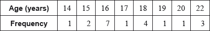

Draw a box-and-whisker diagram, for these students’ ages, on the following grid.

A group of 20 students travelled to a gymnastics tournament together. Their ages, in years, are given in the following table.

The lower quartile of the ages is 16 and the upper quartile is 18.5.
For the students in this group find the mean age;
For the students in this group write down the median age.
Draw a box-and-whisker diagram, for these students’ ages, on the following grid.